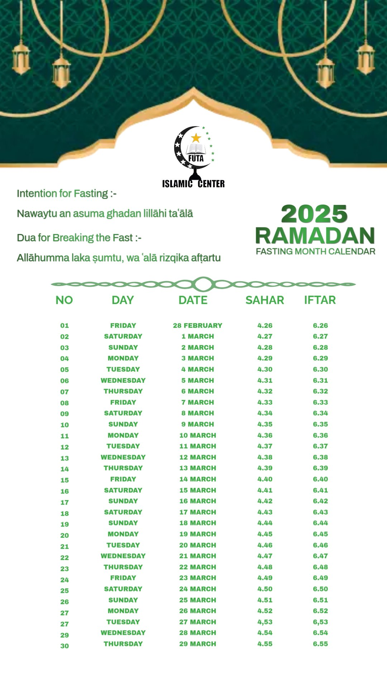

Resources
In Islām, `Ilm (knowledge) is foundational in gaining closeness to Allah SWT. According to the translated Explanations of the Three Fundamental Principles of Islām by the Noble Shaykh Muhammad ibn Saalih al-Uthaymeen (رحمه الله), he said:
Four Fundamental Principles
- 1Knowledge (al-'Ilm) — awareness of Allah, His Beloved Prophet ﷺ, and the religion of Islām with its proofs.
- 2Action upon that knowledge.
- 3Calling others to that knowledge.
- 4Patiently persevering upon that path.
Proof — Surah Al-Asr (103)
وَالْعَصْرِ
إِنَّ الْإِنْسَانَ لَفِي خُسْرٍ
إِلَّا الَّذِينَ آمَنُوا وَعَمِلُوا الصَّالِحَاتِ وَتَوَاصَوْا بِالْحَقِّ وَتَوَاصَوْا بِالصَّبْرِ
In the Name of Allah, The Most Gracious, The Most Merciful.
By time, indeed mankind is in loss — except for those who believe, do righteous deeds, and advise each other to truth and to patience.
As with all concepts, foundation is key, and thankfully we have our Five Pillars of Islām to reference as we navigate our ibadah (worship). In each link below, you'll find a brief overview and helpful guides to these pillars, In shaa Allah.
The Five Pillars of Islām
Foundation of Muslim Faith & Practice
Shahadah
A page showing a brief overview of the declaration of faith.
Salah
A page showing the steps to performing the five daily prayers.
Zakat
A page explaining what Zakat is, who gives it, and includes a calculator.
Sawm
A page with Ramadan 101 resources and fasting guidelines.
Hajj & Umrah
A page explaining these sacred acts of pilgrimage and worship.
Our Mission & Commitment
Knowledge & Growth
At FUTA Islamic Center, we believe that knowledge of Islām and knowledge of the world are both vital for personal and collective growth. In today's rapidly evolving world, access to reliable and relevant education is more important than ever — especially for the Muslim community in the United States.
Community & Resources
Our center is committed to bridging this gap by providing daily Islamic classes, monthly community programs, and curated links to trusted local and national resources that promote academic, professional, and wellness development.
How to Pray
Prayer (Salat) is the second pillar of Islam, right after the declaration of faith (Shahada). It's the heartbeat of a Muslim's daily life, a sacred rhythm that brings calm, clarity, and closeness to the One who created us. It's more than movement. It's more than words. It is presence. It is surrender. It is home.
In this section, you'll learn how to pray step by step, from the intention in your heart to the final peace on your lips. Whether you're learning for the first time, coming back after time away, or simply exploring with respect, this space is for you.
Clear. Gentle. Guided.
May every step bring you closer to the One who hears every whisper.
"Establish prayer at its fixed times, for it has been prescribed upon the believers."
STEP BY STEP COMPLETE GUIDE
PART 1: PREPARATION BEFORE PRAYER
1. Purify Yourself (Wudū')
Prayer is not valid without purification.
Do wudū' (ablution) by washing in this order:
- Hands (3x)
- Mouth (3x)
- Nose (inhale water and blow it out) (3x)
- Face (3x)
- Arms to the elbows (right then left) (3x)
- Wipe the head once, including ears
- Feet to ankles (right then left) (3x)
After wudū', you may say:
أَشْهَدُ أَنْ لَا إِلٰهَ إِلَّا اللّٰهُ وَحْدَهُ لَا شَرِيكَ لَهُ، وَأَشْهَدُ أَنَّ مُحَمَّدًا عَبْدُهُ وَرَسُولُهُ
Ash-hadu an lā ilāha illā Allāh waḥdahu lā sharīka lah, wa ash-hadu anna Muḥammadan ʿabduhū wa rasūluh.
I bear witness that there is no god but Allah alone, with no partner, and I bear witness that Muhammad is His servant and Messenger.
اللَّهُمَّ اجْعَلْنِي مِنَ التَّوَّابِينَ، وَاجْعَلْنِي مِنَ الْمُتَطَهِّرِينَ
Allāhumma ajʿalnī mina al-tawwābīn, wajʿalnī mina al-mutaṭahhirīn.
O Allah, make me among those who constantly repent and make me among those who purify themselves.
2. Face the Qiblah (Direction of the Kaʿbah)
Stand facing Makkah. If unsure, use a compass, app, or ask someone.
3. Confirm the Prayer Time
Each prayer must be performed in its specific time:
4. Call to Prayer (Adhān / Iqāmah)
Adhan:
Allāhu Akbar, Allāhu Akbar (4x)
(God is the Greatest)
Ashhadu an lā ilāha illa Allāh (2x)
(I bear witness there is no god but Allah)
Ashhadu anna Muḥammadan Rasūlullāh (2x)
(I bear witness Muhammad is the Messenger of Allah)
Ḥayya ʿalaṣ-ṣalāh (2x)
(Come to prayer)
Ḥayya ʿalal-falāḥ (2x)
(Come to success)
Allāhu Akbar, Allāhu Akbar (2x)
Lā ilāha illa Allāh (1x)
(There is no god but Allah)
5. Make Intention (Niyyah)
Silently in your heart: "I intend to pray [e.g. Fajr] two rakʿahs for the sake of Allah."
PART 2: ENTERING THE PRAYER (RAKʿAH 1)
Start the Prayer - Takbir al-Iḥrām
Raise both hands up to ears and say:
Allāhu Akbar
(Allah is the Greatest)
This begins your prayer. Now you are standing before your Lord.
Opening Supplication - Duʿā' al-Istiftāḥ (Optional but Sunnah)
Subḥānaka Allāhumma wa bi-ḥamdika wa tabārakasmuka wa taʿālā jadduka wa lā ilāha ghayruk
(Glory is to You, O Allah, and praise is Yours. Blessed is Your Name, Exalted is Your Majesty. There is no god besides You.)
Recite Al-Fātiḥah & Short Surah
Recite Al-Fātiḥah (The Opening Chapter), then recite a short Surah or verses.
Example: Surah Al-Ikhlās
Bowing - Rukūʿ
Bend forward, hands on knees, back straight.
Subḥāna Rabbiyal-ʿAẓīm (3x)
(Glory to my Lord, the Most Great)
Standing After Bowing - Qawmāh
Samiʿa Allāhu liman ḥamidah
(Allah hears the one who praises Him)
Then say:
Rabbanā laka al-ḥamd
(Our Lord, to You belongs all praise)
Prostration - Sujūd
Place your forehead, nose, hands, knees, and toes on the floor.
Subḥāna Rabbiyal-Aʿlā (3x)
(Glory to my Lord, the Most High)
Sit Between Two Sujūd - Jalsah
Rabbi ighfir lī
(My Lord, forgive me)
Second Sujūd
Repeat sujūd again the same way.
That completes one Rakʿah (unit). Stand up and repeat the same for the next rakʿah.
PART 3: FINAL SITTING
After the last rakʿah, remain seated and recite:
At-Tahiyyāt (Tashahhud):
At-taḥiyyātu lillāhi waṣ-ṣalawātu waṭ-ṭayyibāt.
As-salāmu ʿalayka ayyuhā an-nabiyyu wa raḥmatullāhi wa barakātuh.
As-salāmu ʿalaynā wa ʿalā ʿibādillāhi aṣ-ṣāliḥīn.
Ash-hadu an lā ilāha illā Allāh,
wa ash-hadu anna Muḥammadan ʿabduhū wa rasūluh.
Meaning:
All greetings, prayers, and pure words are for Allah.
Peace be upon you, O Prophet, and the mercy of Allah and His blessings.
Peace be upon us and upon the righteous servants of Allah.
I bear witness that there is no god but Allah,
and I bear witness that Muhammad is His servant and His messenger.
Optional Duʿā'
Ask Allah for whatever you wish, from the heart.
Example: "O Allah, guide me, forgive me, protect me."
PART 4: ENDING THE PRAYER - TASLĪM
Turn your head to the right and say:
As-salāmu ʿalaykum wa raḥmatullāh
Then to the left and say the same.
You have now completed your prayer.
"Indeed, prayer prevents immorality and wrongdoing."
Ramadan 101: A Simple Guide
Asalam Walaykum! Whether you're new to Islam, just curious, or looking for a refresher, this is your go-to guide for understanding the basics of Ramadan.

What is Ramadan?
Ramadan is the 9th month of the Islamic calendar and a special time of year when Muslims around the world fast from dawn to sunset. It's a month dedicated to worship, spiritual growth, generosity, and community. Muslims believe this is the month when the Quran was first revealed.
When Does Ramadan Happen?
Since the Islamic calendar is based on the moon, the exact start date of Ramadan changes each year. It begins when the new moon is sighted and lasts for 29 or 30 days.
What is Fasting?
From dawn (Fajr) to sunset (Maghrib), Muslims fast by avoiding:
Fasting isn't just physical, it's spiritual. It's about patience, gratitude, and reconnecting with God.
We break our fast at sunset with a meal called Iftar, usually starting with dates and water.
What Happens at the Masjid?
Ramadan is a very active time at the masjid!
Who is Required to Fast?
Fasting is a duty for all healthy adult Muslims, but there are exceptions. Those who are young children, elderly, pregnant, nursing, menstruating, sick, or traveling are not required to fast.
What is Zakat al-Fitr?
This is a special charity that every Muslim gives before Eid. It ensures those in need can also enjoy the celebration. You can usually give this through your masjid in the last few days of Ramadan.
What is Eid al-Fitr?
At the end of Ramadan comes a big celebration called Eid al-Fitr! It begins with a special prayer at the masjid and is a joyful time spent with family, friends, food, and gift-giving.
Important Duas
Dua to Reach Ramadan:
اللَّهُمَّ بَلِّغْنَا رَمَضَانَ
Allahumma Ballighna Ramadan
"O Allah, let us reach the month of Ramadan."
Dua for Iftar (Breaking the Fast):
اللَّهُمَّ إِنِّي لَكَ صُمْتُ وَبِكَ آمَنتُ، وَعَلَيْكَ تَوَكَّلْتُ، وَعَلَى رِزْقِكَ أَفْطَرْتُ
Allahumma inni laka sumtu wa bika aamantu wa 'alayka tawakkaltu wa 'ala rizq-ika-aftartu.
"O Allah! I fasted for You and I believe in You and I put my trust in You and with Your sustenance, I break my fast."
Common Questions
Can I take medicine while fasting?
If it's non-essential, you should wait until after sunset. However, those who need medication regularly (and can't postpone it) may be exempt from fasting, speak with a qualified imam or doctor.
Can I come to Taraweeh even if I don't know Arabic?
Definitely. Taraweeh is open to everyone, and many just come to listen and be part of the atmosphere.